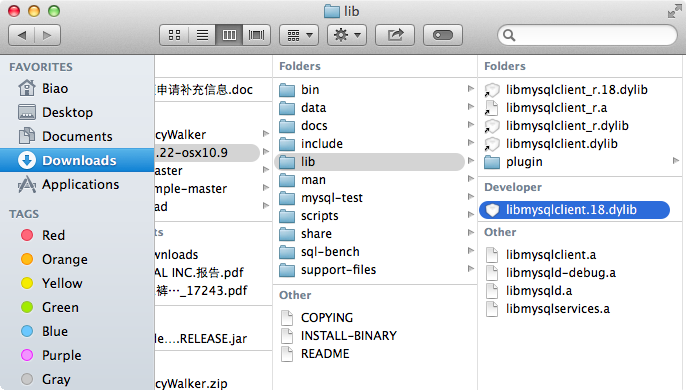
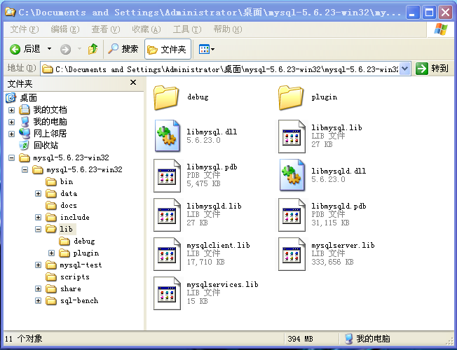
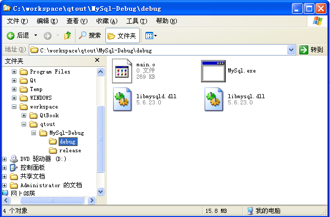

Qt 里访问 MySQL 是件很简单的事，但也有可能很不简单。说其简单是因为熟悉的人都知道只需要有 MySQL 的驱动插件和复制 MySQL 的动态链接库到程序可识别的环境变量的路径下即可，对于不熟悉的人来说，看到 Qt 给我们的错误信息简单到 QMYSQL driver not loaded，从这一句简单的提示里却找不到任何头绪，不知道应该怎么做，在网络上搜索了很多文章，照着做有的人问题解决了，有的人试过了很多种方法问题仍然存在。在这一节里，我们会一步一步的来分析，解决访问 MySQL 的问题。访问其他数据库也可以用同样的方法解决。
Qt 访问 MySQL 需要 2 个动态链接库文件，一个是 Qt 自己的 MySQL 驱动插件，另一个是 MySQL 提供的动态链接库，缺一不可。在程序里指定要访问的数据库为 MySQL，Qt 会自动的加载 MySQL 驱动插件，其实现依赖于MySQL 的动态链接库 访问 MySQL。
MySQL 的驱动插件
Qt 5 的 SDK 默认提供了编译好的 MySQL 驱动插件，位于 plugins/sqldrivers(Mac OS 下为 libqsqlmysql.dylib，Windows 下为 qsqlmysql.dll)。但如果用的是 Qt 4，很不幸， 需要我们自己编译 MySQL 的驱动插件，网络上有很多关于编译 MySQL 的驱动插件的文章，而且不同的系统，不同的编译器中步骤有所区别，需要相当大的篇幅才能讲清楚，在这里就不重复赘述了。
MySQL 的动态链接库（MySQL 社区版下载地址）
- OS X 下载解压版解压，在目录 lib 里可以找到 MySQL 的动态链接库
libmysqlclient.18.dylib
 - Windows 下载解压版解压，在目录 lib 里可以找到 MySQL 的动态链接库
libmysql.dll和libmysqld.dll

准备数据库环境
假设在我们的电脑中已经准备好了如下的环境:
- 安装了 MySQL
- 在 MySQL 中创建了一个数据库名为 qt
- 在数据库 qt 中创建表 user
1 | CREATE TABLE `user` ( |
表中的数据如下:
| id | username | password | mobile | |
|---|---|---|---|---|
| 1 | Alice | passw0rd | NULL | NULL |
| 2 | Bob | Passw0rd | NULL | NULL |
| 3 | Josh | Pa88w0rd | NULL | NULL |
访问 MySQL 数据库
接下来用 Qt 访问 MySQL，输出表 user 中所有的 username，如果不出错的话，输出如下：
“Alice”
“Bob”
“Josh”
Qt 访问 MySQL 的步骤:
- 加载
MySQL 驱动 - 设置
数据库名 - 设置 MySQL 所在电脑的
IP - 设置
用户名 - 设置
密码 - 打开数据库，创建数据库连接
- 创建 query 对象，执行 SQL 查询语句
- 遍历 query 查询到的结果
1 |
|
不幸的是，程序运行的结果没有输出所有的 username，而是输出下面的错误信息:
QSqlDatabase: QMYSQL driver not loaded
QSqlDatabase: available drivers: QSQLITE QMYSQL QMYSQL3 QPSQL QPSQL7
Connect to MySQL error: “Driver not loaded Driver not loaded”
等等，这是肿么了，竟然报错，我们的代码和别人的是一样的啊，再检查一遍，Qt 的帮助文档里也是这样做的，难道是人品问题？
明明提示我们 可用的数据库驱动里就有 MySQL 的驱动 啊，而且我们也看到了在 plugins/sqldrivers 目录里确实有 MySQL的驱动插件，为什么会报错呢？这貌似不科学！如果我们只是盯着看 QMYSQL driver not loaded，这错误提示也太简单了，当然想不明白。
还记不记得开始的时候说过，访问 MySQL 需要 2 个动态链接库文件，一个是 MySQL 驱动插件，另一个是其依赖的 MySQL 的动态链接库，缺一不可。
QSqlDatabase: available drivers里有QMYSQL，说明我们的环境中已经有了MySQL 驱动插件。- 但是，什么是
MySQL 的动态链接库？应该放在哪里？MySQL 的动态链接库是 MySQL 提供给我们编程访问 MySQL 的库文件，在 MySQL 的 lib 目录里有。- 应该放在哪里？
我们可以用下面的程序来加载 MySQL 驱动插件，如果加载出错，原因有可能为依赖的库文件找不到，库文件的版本不兼容等，程序会给出详细的错误信息，依据这个线索我们就能够找出具体是什么错误，从而很容易的解决问题了（这个方法也可以用来加载测试其他的 Qt 插件）。
1 |
|
OS X 里运行程序，输出如下：
false
Cannot load library /Users/Biao/Qt5.4.0/5.4/clang_64/plugins/sqldrivers/libqsqlmysql.dylib:
(dlopen(/Users/Biao/Qt5.4.0/5.4/clang_64/plugins/sqldrivers/libqsqlmysql.dylib, 5):Library not loaded: /opt/local/lib/mysql55/mysql/libmysqlclient.18.dylib
Referenced from: /Users/Biao/Qt5.4.0/5.4/clang_64/plugins/sqldrivers/libqsqlmysql.dylib
Reason:image not found)
我们来分析一下 OS X 中的错误：loader.load() 如果加载成功则返回 true，返回 false 表明加载失败。loader.errorString() 给出了插件加载失败的具体原因：找不到 /opt/local/lib/mysql55/mysql/libmysqlclient.18.dylib。
好了，既然知道了具体的错误原因，那么接下来就好办了，从 MySQL 的 lib 目录里复制 libmysqlclient.18.dylib 到 /opt/local/lib/mysql55/mysql/ （没有这个目录？好说，我们自己手动创建就可以了），然后再次运行程序，这次输出：
true
“Unknown error”
loader.load() 返回了 true，MySQL 驱动插件加载成功了，看来这个问题很好解决嘛。快快运行上面访问 MySQL 的程序，见证奇迹的时刻到了：
“Alice”
“Bob”
“Josh”
Windows 里运行程序，输出如下：
注意：修改 MySQL 驱动插件的路径为你的系统里相应的路径，如 loader.setFileName(“C:/Qt/Qt5.4.0/5.4/mingw491_32/plugins/sqldrivers/qsqlmysqld.dll”);
false
Cannot load library C:/Qt/Qt5.4.0/5.4/mingw491_32/plugins/sqldrivers/qsqlmysqld.dll：找不到指定的模块
很不幸，这里的错误说明没有 OS X 里那么清晰，如果不熟悉，还是找不到问题的根源。如果我们在 loader 中加载一个不存在的 dll 呢？如：loader.setFileName(“C:/Qt/Qt5.4.0/5.4/mingw491_32/plugins/sqldrivers/qsqlmysqldddd.dll”)，这时输出
false
The shared library was not found.
由此对比分析出加载 MySQL 驱动出错不是找不到驱动插件 qsqlmysqld.dll，而是找不到 qsqlmysqld.dll 依赖的 MySQL 的 dll. 把 libmysql.dll 和 libmysqld.dll 复制到 exe 文件所在目录(如下图)，然后再运行程序，这时 MySQL 驱动插件就加载成功了，输出
true
“Unknown error”

Linux 中的输出信息和 OS X 几乎一样，这里就不再赘述了
运行开始的程序，正确输出，至此，Qt 访问 MySQL 大功告成，接下来诸位想用 Qt 对 MySQL 做些什么事，此处省略一万字……